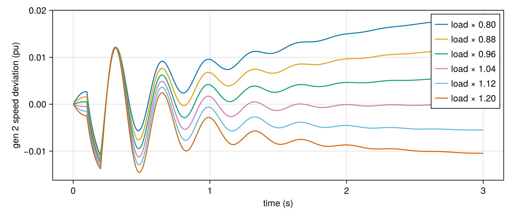
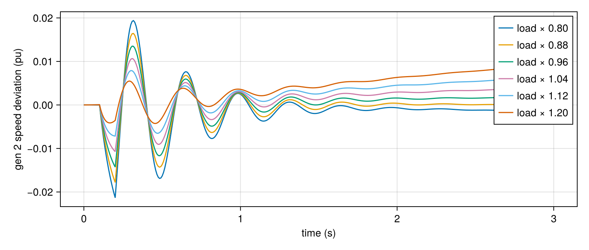

Many scenarios at once
Studies rarely need one simulation. Typical batches are:
- many loading levels,
- many parameter values,
- many contingencies.
GradPower.integrate_batched! integrates M scenarios that share the same network and events but have their own initial state bl.z[m, :] and parameters bl.p[m, :].
- Threads: scenarios run in parallel on Julia threads (start Julia with
-t auto). - Same result as one-by-one: each scenario's trajectory is bit-for-bit what
integrate!gives for it alone.
A load sweep
using GradPower, CairoMakie, Printf
ex = joinpath(pkgdir(GradPower), "examples")
sys = from_psse(joinpath(ex, "ieee9_v33.raw"), joinpath(ex, "ieee9bus_gov.dyr"))
build_network!(sys); runpf!(sys)
dp = DynamicProblem(sys); initialize_dynamics!(dp, sys)
add_event!(sys, ContingencyEvent(sys.busmap[7], 0.02, 0.1, 0.2))
M = 6
bl = GradPower.BatchedLayout(dp, sys, M) # M copies of (z, u, p)
# scenario m: every load scaled by s_m (P, Q and the impedance part)
zl = sys.dynamic.layout.zipload
scales = range(0.8, 1.2, length = M)
for m in 1:M, k in 1:zl.n, o in (0, 1, 7, 8) # pinj, qinj, yreal, yimag
bl.p[m, Int(zl.par_ptr[k]) + o] *= scales[m]
end
t, trajs = GradPower.integrate_batched!(bl, sys, 3.0)
length(trajs), size(trajs[1])(6, (66, 361))w2 = GradPower.gen_speeds(sys)[2]
fig = Figure(size = (800, 340))
ax = Axis(fig[1, 1], xlabel = "time (s)", ylabel = "gen 2 speed deviation (pu)")
for m in 1:M
lines!(ax, t, trajs[m][w2, :], label = @sprintf("load × %.2f", scales[m]))
end
axislegend(ax)
fig
Only the parameters were scaled, so each scenario starts from the operating point of the base case and drifts toward a new equilibrium. To start each scenario at its own equilibrium, solve the power flow and initialize once per loading level, then copy the result into bl.z[m, :] and bl.p[m, :]. Three things must be scaled together:
- the static loads, used by the power flow;
- the ZIP load devices, used by the dynamics;
- the generation, so the slack does not pick up the whole change.
function operating_point(scale)
s = from_psse(joinpath(ex, "ieee9_v33.raw"), joinpath(ex, "ieee9bus_gov.dyr"))
slack = Set(i for (i, b) in enumerate(s.buses) if b.type == 3)
for l in s.loads; l.pd *= scale; l.qd *= scale; end
for g in s.gens; g.bus in slack || (g.psch *= scale); end
for d in s.dynamic.devices
d.dtype isa GradPower.ZIPLoad || continue
d.dtype.pinj *= scale; d.dtype.qinj *= scale
end
build_network!(s); runpf!(s)
d = DynamicProblem(s); initialize_dynamics!(d, s)
return d.zvec, d.pvec
end
for m in 1:M
z, p = operating_point(scales[m])
bl.z[m, :] .= z; bl.p[m, :] .= p
end
t, trajs = GradPower.integrate_batched!(bl, sys, 3.0)
fig = Figure(size = (800, 340))
ax = Axis(fig[1, 1], xlabel = "time (s)", ylabel = "gen 2 speed deviation (pu)")
for m in 1:M
lines!(ax, t, trajs[m][w2, :], label = @sprintf("load × %.2f", scales[m]))
end
axislegend(ax)
fig
Now every scenario is flat until the fault, and the heavier cases swing harder. scripts/dynstab_io.jl (apply_load_scale!) does the same for the dataset pipeline, including resetting the generators' reactive-power limits between levels.
All scenarios of one batch must have the same device layout: the same machines and controllers, in the same order. Only values (states and parameters) may differ.
Per-scenario output
The recording options work for batches too:
save_every,save_idxsandsave_eltypeapply to every scenario;step_callback(m, k, t, z)is called for each scenariom. With threads it runs concurrently, so it must only touch data belonging to scenariom.
peak = zeros(M) # max |speed dev.| per scenario
cb = (m, k, t, z) -> (peak[m] = max(peak[m], abs(z[w2])); nothing)
GradPower.integrate_batched!(bl, sys, 3.0; save_idxs = Int[], step_callback = cb)
round.(peak, digits = 5)6-element Vector{Float64}:
0.02478
0.01878
0.01471
0.01314
0.01221
0.01651Batches on the GPU
On an NVIDIA GPU the same kind of batch can run entirely on the device, where it pays off for large networks. See Linear solvers and GPU.